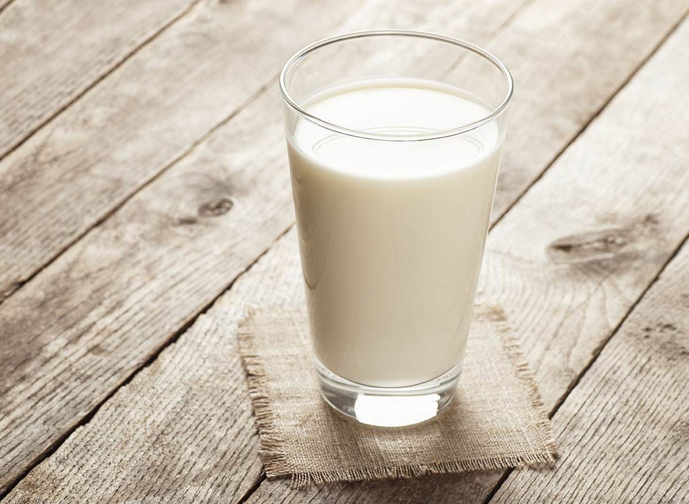

Welcome to the Cold Glass of Milk Recipe page

This recipe is great for those hot summer days when you come back inside PARCHED for something cool and quenching.
Milk is good for the bones and good for the soul!
Ingerdients:
- 8+ oz glass
- 2% milk
- Dexterity
Directions:
- Grab chilled glass from freezer.
- Pour cold milk into glass until 90% full.
- DO NOT SPIILL MILK AND SUBSEQUENTLY CRY OVER IT.
Click here to go back to the main recipes page!